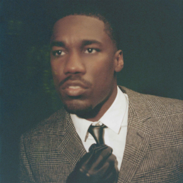
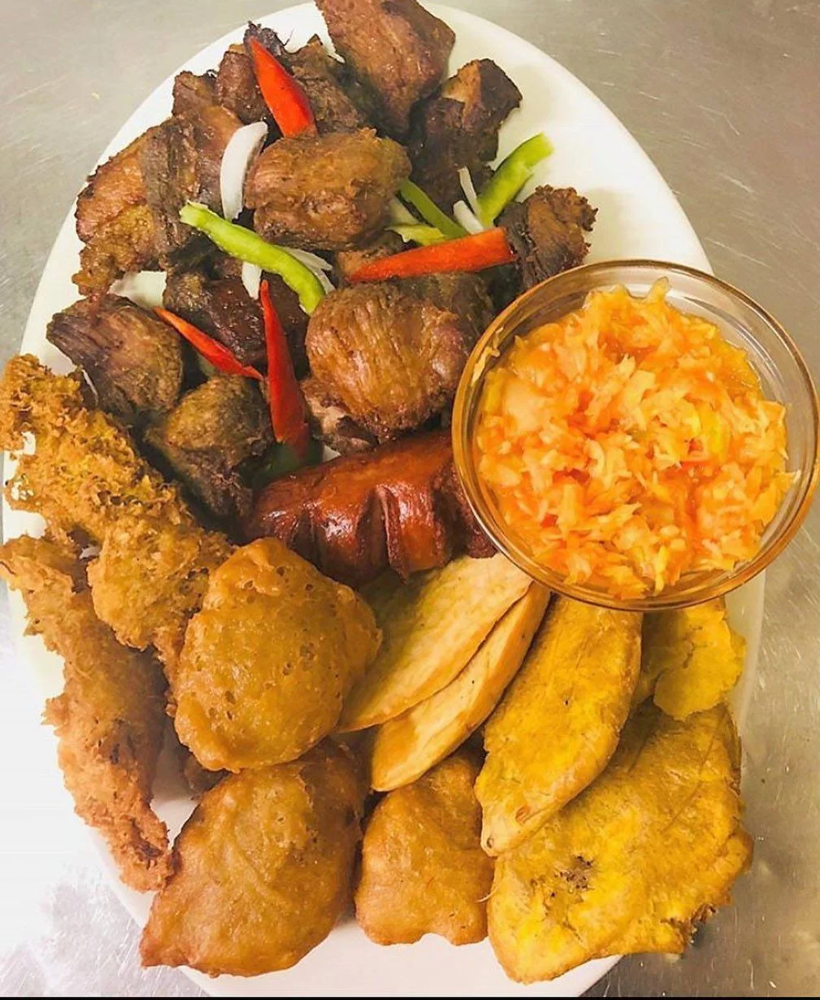

My top 5 favorite Types of Cuisines
- Carribean
- Indian
- Mexican
- Italian
- Greek
These are some of my favorite movies, music, games, and foods!
These are some of my favorite distopian movies, that i enjoy watching.

These are my favorite artists because they have amazing ways of moving their audience with their storytelling

These are some of my favorite storytelling games.
These are some of my favorite Haitian foods, that I think everyone should try.

Watch Fritay Recipe and enjoy!